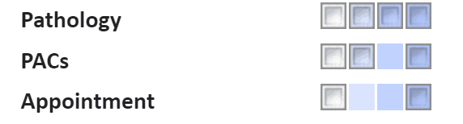

Users can configure their own preferences from the start page. One preference users can set is Notifications.
This article is an overview of the Settings > Notifications
Admin > Configuration > Notification allows Super Users to set default behaviours across the chamber, however individual users can set their own Notification behaviour via Start Page > Settings > Preferences, thus overriding the defaults.
To learn more about the chamber wide settings, please see Admin > Configuration > Notifications.
The notifications can be tailored to behave differently depending upon whether the user is logged in or logged out of the application and can be set to alert users via the application (chamber) itself, forwarded to the user's email or SMS (Or any combination of these three).
*These notification defaults will apply to all users unless they choose to override them in their user personal settings.
Depending on the task type, there are different notification setting options for when users are logged in to the chamber, and logged out. From left to right, the options are:
For most notification types you will find only two check boxes - the white checkbox will stop all notifications of that type going to a user, the darkest blue checkbox will allow all notifications of that type to the user. This can be observed in the image below next to "Appointment"
The exception to this is in Pathology and PACs work types where the user can be notified based on the urgency of these results (The lighter blue will inform a user only when a high priority result is received, the lighter blue will allow anything above normal status to notify the user.) This can be observed in the image below next to "Pathology" and "PACs"

Notification type | Application, Email and SMS notification toggle types |
Pathology | None | High Priority Only | Normal Priority | All |
| PAC's | None | High Priority | All |
| Appointment | None | All |
| None | All | |
| Feed | None | All |
| Network | None | All |
| Prescription | None | All |
| Task | None | All |
| Incoming Referral | None | All |
| Outgoing Referral | None | All |
| Administration | None | All |
For example, a clinician may not wish to be notified about Pathology reports unless they are high priority when outside of their work hours. When you are satisfied with these settings, hit the ‘Save’ button in the top left (for global settings) or the bottom of the page (in personal settings).